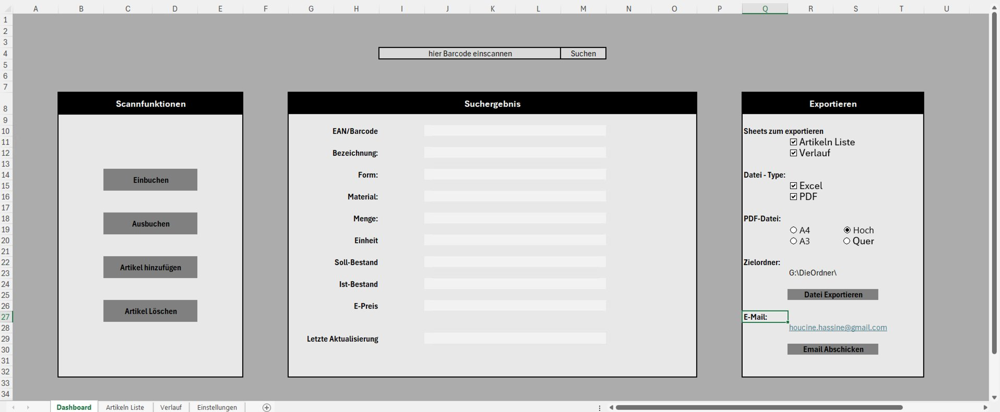
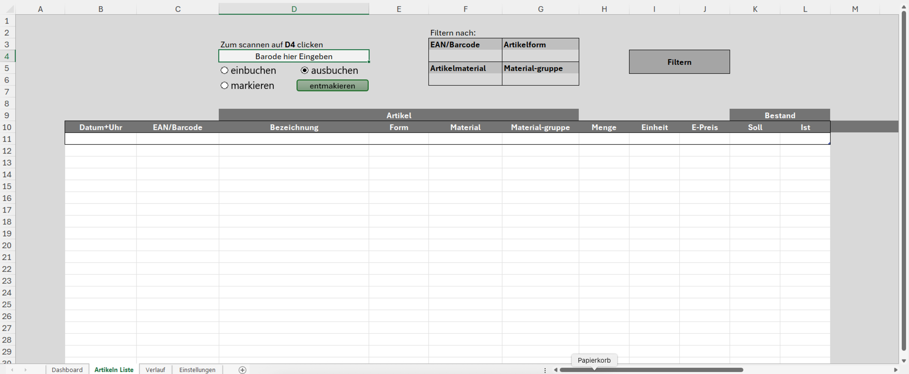
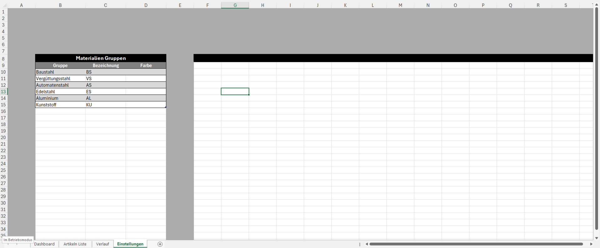

Blatt: Dashboard
Scannfunktionen · Suchergebnis · Exportieren

Drei Bereiche: Scannfunktionen (Einbuchen/Ausbuchen/Artikel hinzufügen/löschen), Suchergebnis-Anzeige und Exportbereich mit Dateityp, Papierformat, Zielordner und E-Mail-Versand.
Blatt: Artikeln Liste
Scannfeld D4 · Filtern nach · Tabelle Artikel/Bestand

Scanfeld in D4, ein Filterblock mit vier Kriterien (EAN/Barcode, Artikelform, Artikelmaterial, Material-Gruppe) und die Bestandstabelle mit Artikel- und Mengenspalten.
Blatt: Verlauf
Scannfeld F12 · Filtern nach · Tabelle Artikel/Bestand
Gleicher Aufbau wie „Artikeln Liste“, zusätzlich mit Zeitstempel-Spalte „Datum+Uhr“ – hier wird jede Bewegung einzeln protokolliert statt nur der aktuelle Bestand.
Blatt: Einstellungen
Materialien-Gruppen als zentrale Nachschlagetabelle.

Die Tabelle „Materialien Gruppen“ legt fest, welche Buchstaben-Abkürzung (Spalte „Bezeichnung“) für jede Materialgruppe im Barcode verwendet wird – Grundlage für die automatische Barcode-Erzeugung.
In späteren Versionen kommen hier weitere Nachschlagetabellen dazu: Profil-Abkürzungen, Lagerorte, Einheiten und Artikeltypen (Voll/Rest) – siehe Seite 7.